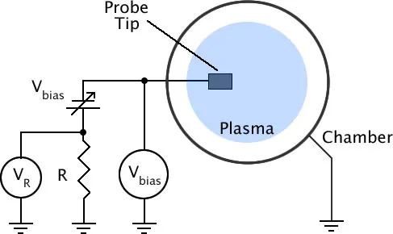

Plasma Diagnostics
Plasma diagnostic devices are used to measure and analyze plasma properties. The main diagnostic methods include Langmuir probes, plasma spectroscopy, and interferometry.
Langmuir Probe
A Langmuir probe is an electrode placed in plasma to measure important plasma parameters such as plasma density, electron temperature, and plasma potential.

Figure 9 – Langmuir probe analysis
Plasma Spectroscopy
Plasma spectroscopy is based on the interaction between electrons and atoms. Electrons in plasma collide with atoms and transfer energy to them, causing the atoms to enter an excited state.
When atoms return to their normal state, they emit photons with energy:
E = hν
As a result, a spectrum with characteristic emission lines appears. By analyzing this spectrum, it is possible to determine plasma composition, temperature, particle velocity, and density.
Plasma Interferometry
Plasma interferometry is a diagnostic method where a laser beam passes through the plasma. The plasma changes the refractive index, and this change can be used to determine the electron density of the plasma.
The system contains two beams:
- Reference beam – does not pass through the plasma.
- Diagnostic beam – passes through the plasma.
The displacement of the diagnostic beam relative to the reference beam is analyzed to obtain information about plasma properties.